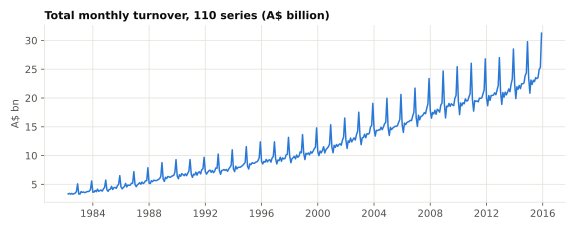
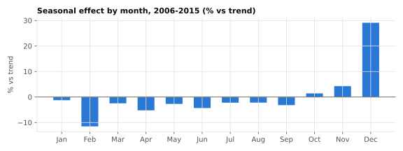
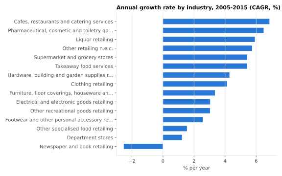
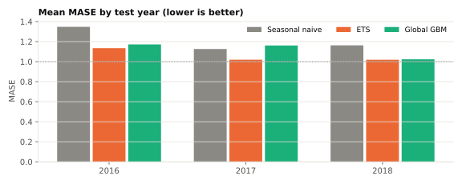
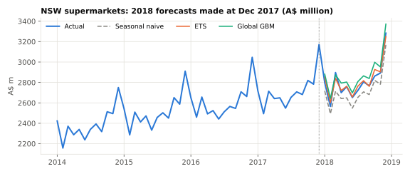

Data science project · Status: completed first version
Retail Demand Forecasting & Planning Buffers
Forecasting 12 months of retail turnover for 110 Australian state-by-industry series, and testing whether a forecast-error buffer actually delivers the coverage it promises.
- Data
- ABS Retail Trade, cat. 8501.0, table 11 (via tsibbledata), 1982-04 to 2018-12
- Evaluation
- Rolling origin: Dec 2015, Dec 2016, Dec 2017 → next 12 months
- Stack
- Python, pandas, statsmodels, scikit-learn, matplotlib
Result in one line
ETS had the lowest mean MASE (1.06 vs 1.21 for the seasonal-naive baseline, 13% lower) and beat the baseline on 62% of series-years. That is a modest, honest improvement: the seasonal-naive baseline is strong for stable retail series.
1. Problem
A retailer or supplier planning stock, staffing or purchasing needs to know next year's demand by month. The questions here: how much better than "same month last year" can simple, well-evaluated models do, and how large a buffer above the forecast is needed to cover demand a chosen share of the time?
2. Data
Monthly retail turnover (A$ million, current prices) published by the Australian Bureau of Statistics. ABS publishes both industry groups and their sub-industries, so only the 15 lowest-level industries are used to avoid double counting. Of 114 leaf series, 110 are complete through 2018-12; 4 discontinued series were excluded. Validation checks found no missing, duplicate or non-positive values.
What this data is not: it is turnover in dollars, not unit sales, and it contains no stock levels, prices, promotions, lead times or costs.
3. Exploratory analysis
EDA uses data up to Dec 2015 only, so nothing from the test years informed modelling choices.



4. Models
- Seasonal naive (baseline): each month next year equals the same month this year.
- ETS: one exponential smoothing model per series on log turnover, with additive damped trend and additive seasonality.
- Global GBM: one gradient-boosted tree model trained across all series to predict year-over-year log growth from lagged growth, horizon, month, state and industry. Every feature is computed from data available at the forecast origin.
Hyperparameters were fixed before evaluation and not tuned on the test years.
5. Evaluation
Each model forecasts 12 months ahead from three origins (Dec 2015, 2016, 2017) using only data up to the origin, giving 3,960 forecasts per model. Series range from under A$1m to over A$2bn a month, so the headline metric is MASE: MAE divided by the in-sample MAE of the seasonal naive, so 1.0 means "as good as last year's seasonal pattern was historically". MAPE is reported as a secondary metric; the data has no zeros, but small series inflate percentage errors.
| Model | Mean MASE | Median MASE | Median MAPE | Series-years beating baseline |
|---|---|---|---|---|
| Seasonal naive | 1.21 | 1.01 | 5.8% | – |
| ETS | 1.06 | 0.89 | 4.8% | 62% |
| Global GBM | 1.12 | 0.96 | 5.1% | 58% |

| Test year | Seasonal naive | ETS | Global GBM |
|---|---|---|---|
| 2016 | 1.35 | 1.13 | 1.17 |
| 2017 | 1.13 | 1.02 | 1.16 |
| 2018 | 1.16 | 1.02 | 1.02 |

6. Planning-buffer scenario
Scenario, not an inventory model. Without stock, unit or lead-time data, true reorder points cannot be computed. Instead: size a per-series buffer above the ETS forecast from its 2016–2017 errors, then check how often that buffer would have covered actual 2018 turnover.
| Target coverage | Realised coverage 2018 | Median buffer (% of forecast) |
|---|---|---|
| 80% | 76.4% | 4.1% |
| 90% | 82.4% | 6.0% |
| 95% | 87.7% | 8.0% |
At a 90% target the buffer covered 82.4% of 2018 series-months (below target by 7.6 points). The gap shows that buffers sized from two years of errors do not transfer reliably to the next year.
7. Limitations
- Turnover is in current dollars, so it mixes price inflation with volume; it is a demand proxy, not unit demand.
- Only three test years; results could differ in shock periods (the data ends before 2020).
- Buffers are calibrated from just 24 monthly errors per series, which is a small sample for tail quantiles.
- No exogenous drivers (prices, promotions, holidays moving between months, macro data).
- No prediction intervals from the models themselves; the buffer analysis uses empirical errors instead.
8. Next steps
- Apply the same pipeline to a unit-level dataset with stock data (for example a store-item sales dataset) to compute real reorder points.
- Add hierarchical reconciliation so state and industry forecasts add up to national totals.
- Compare against a tuned global model using a separate validation year.
Reproduce
pip install -r requirements.txt
python -m src.run_pipelineData file pinned to tsibbledata commit ccfcb321bb4f, SHA-256 1826ec66b3d82edb…. All numbers on this page are written by src/run_pipeline.py into reports/metrics.json.